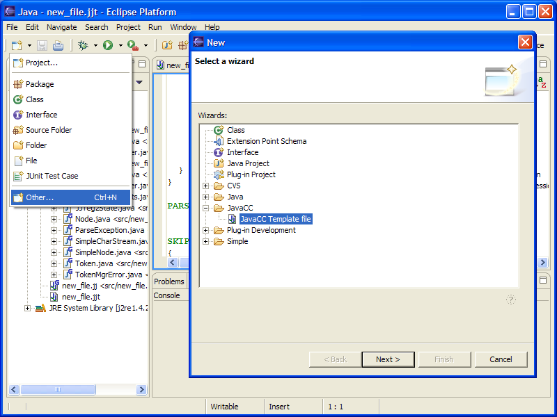

The New Wizard can generate for you a basic .jj, .jjt, ot jtb
file.
To launch the Wizard click on "New" ->
"Other..." or Ctrl+N :

The files used as templates are in the folder "/templates"
of the plugin, you can customise them.
Note that
1) if you open this wizard by a right clic on a element in the Package Explorer,
the proposal will be set with the package you selected.
2) the files are instanciated with the correct package directive.
3) there is a problem with .jtb which only takes package directive from the command line, so the option is set accordingly.